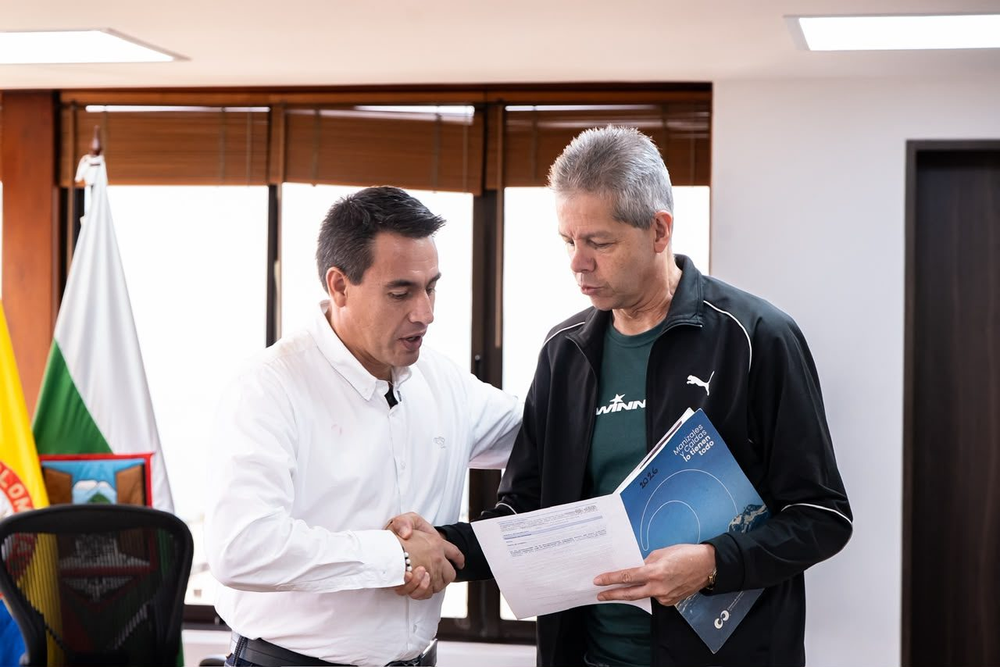
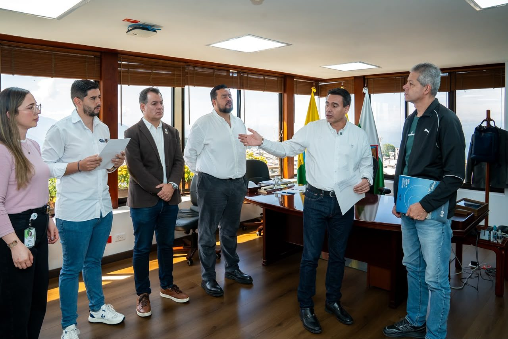

Cifras a destacar
Ver todas
Inmuebles visitados
5.956
Después del sismo del 10 de agosto de 2026, nadie se queda solo. La Alcaldía de Manizales acompaña a cada familia y a cada comercio: visita los inmuebles, revisa los daños y aporta para su recuperación.

Nuestro propósito
Contribuimos a la recuperación de bienes, activos, capacidades económicas o condiciones de habitabilidad de inmuebles afectados directamente por el sismo del 10 de agosto de 2026.
Resultados esperados del PlanReconstruir mejor, sin reactivar el riesgo
Recuperar el valor patrimonial de los activos afectados o perdidos por las familias o empresas del municipio.
Restablecer las actividades económicas y sociales del municipio.
Fortalecer el ánimo, el entusiasmo y el sentido de pertenencia, vínculo e identidad de los habitantes y visitantes del municipio.
En línea
Así se entregan
Las asignaciones de los Aportes a la Recuperación Patrimonial se entregan a cada propietario, con los pasos y documentos para hacerlas efectivas.
Entregas ARP
Se notifica al propietario y se asigna el valor de recuperación patrimonial, con los pasos y documentos a seguir para hacerlo efectivo.
Ver los cinco pasosLa entrega, en el despacho
Cada documento, explicado
El equipo acompaña

El aporte, en sus manos
En el territorio
Elija la capa y toque una comuna para ver sus cifras. Entre más amarillo el color, más alta la cifra; las burbujas muestran los aportes asignados.
Cargando el mapa…
Toque una comuna en el mapa o en la lista.
El proceso
Cada inmueble recorre el mismo camino. La visita técnica es la que decide qué sigue.


Los profesionales evalúan y revisan su inmueble: muros, estructura y otros elementos de la edificación. Se mide lo que se debe reparar.
El equipo técnico de presupuestos, con un modelo de costeo y APU para reparaciones de edificaciones, revisa y confirma el aporte a la recuperación que genera la plataforma.
Con los gerentes de zona y el equipo evaluador, se socializa con los propietarios el aporte que recibirá el inmueble.
Se notifica al propietario y se asigna el valor de recuperación patrimonial, con los pasos y documentos a seguir para hacerlo efectivo.
De acuerdo con la modalidad del aporte y el caso de cada inmueble, se entrega el valor económico del aporte.
50 · 7

Atención al ciudadano
Personas y comercios afectados por el sismo pueden escribirnos para pedir acompañamiento, hacer una consulta o presentar una petición, queja o reclamo (PQR).
pqr@planrecuperacionmanizales.gov.coQuiénes lo hacen posible
Visitan y evalúan cada inmueble, predio por predio, y miden lo que hay que reparar.
Acompañan a las familias y los comercios de cada sector.
Orienta a cada persona sobre qué sigue en su caso.
Calcula y revisa el costo de cada reparación con precios unitarios (APU).

Licencias
No toda obra necesita licencia. Depende del caso de su inmueble: si es una reparación locativa, si el daño es estructural, si el inmueble fue demolido o si es un bien de interés cultural.
La Ventanilla Única de la Construcción (VUC) se abre en otra pestaña y explica cómo radicar la licencia.
¿Cuál es su caso?
Caso 1 · Reparaciones locativas
TrámiteCaso 2 · Daño estructural
TrámiteModalidad reforzamiento estructural o modificación.
Profesionales que contrata el beneficiarioCaso 3 · Inmueble demolido que tenía licencia o reconocimiento
TrámiteSobre los planos originales y con cumplimiento de la norma sismorresistente vigente.
Profesionales que contrata el beneficiarioCaso 4 · Inmueble demolido sin antecedente de licencia
TrámiteCaso 5 · Bienes de interés cultural o en su área de influencia
TrámiteSobre estos datos
Última actualización: 19 de noviembre de 2026